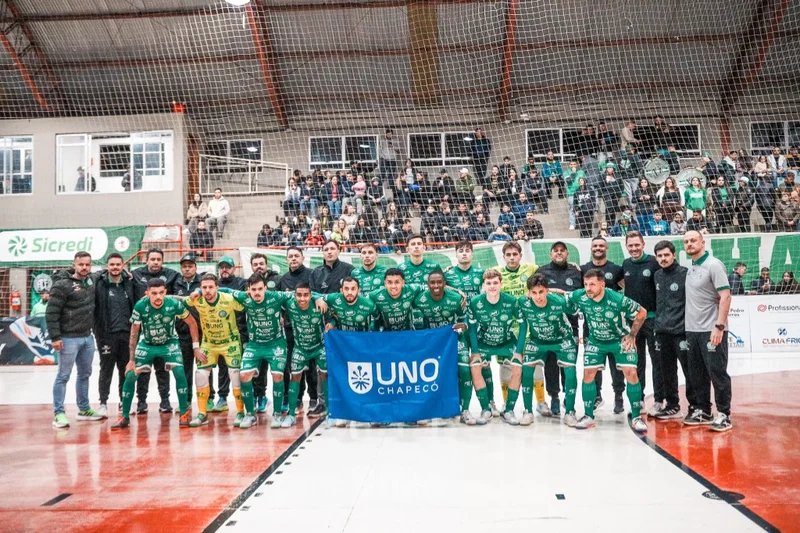
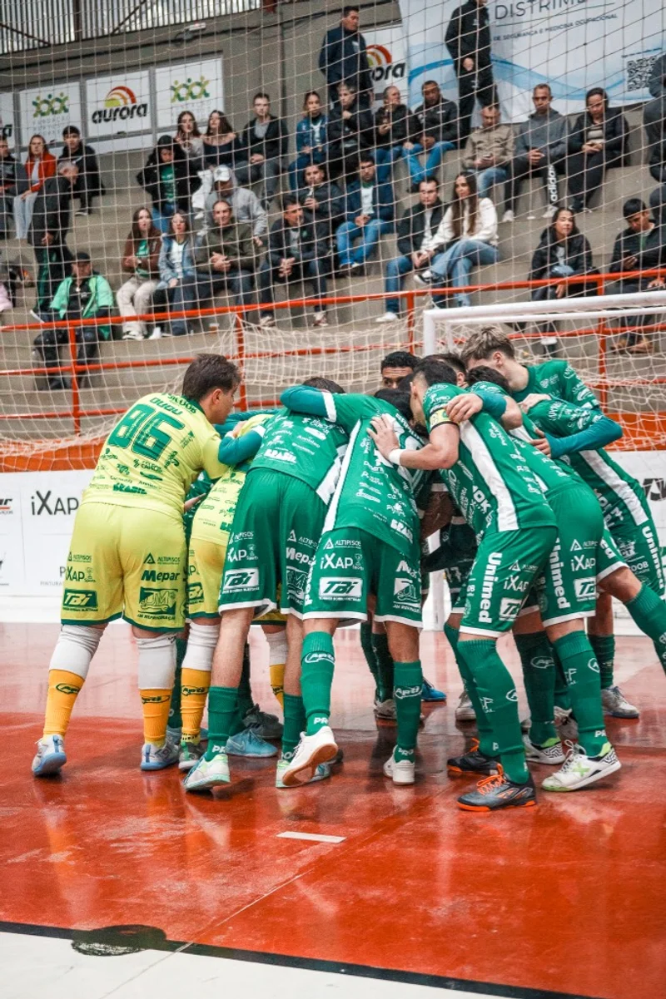

A equipe Prefeitura de Chapecó/Chapecoense/Unochapecó encara um novo desafio nesta temporada. No próximo sábado (16/5), o Verdão das Quadras estreia na Copa Santa Catarina de Futsal. O primeiro compromisso pela competição será na cidade de Maravilha, no Ginásio Gelso Tadeu de Mello Lara, às 19h, contra o time local.
O confronto vale pela terceira rodada, isso porque a Chape Futsal folgou na primeira e teve o jogo da segunda, contra a Apaff/Floripa, em casa, adiado para a data a ser definida. O Maravilha, por sua vez, já disputou duas partidas pelo torneio – venceu a ADAF/Saudades por 4 a 0, como anfitrião, e foi superado pelo Catanduvas por 8 a 3, na condição de visitante – e aparece em quarto lugar, com três pontos.
A Copa SC reúne 14 clubes. Na primeira fase, os participantes estão divididos em duas chaves de sete e se enfrentam em turno único, dentro do respectivo grupo. Os quatro primeiros de cada se classificam ao mata-mata. As quartas, a semi e a final serão em duelos de ida e volta, com a decisão sendo no reduto da agremiação que apresentar melhor campanha. O campeão conquista o direito de jogar a Copa do Brasil de 2027.
Chapecoense e Maravilha integram o grupo A. A liderança é da Apaff, seguido na ordem por Pinhalense e Catanduvas, todos com três pontos, mesma pontuação da ADAF, quinta colocada. A Xaxiense/Arvoredo é o sexto, sem ponto somado. O Verdão das Quadras é o único que não estreou.
A classificação da chave B está da seguinte forma: Pouso Redondo (1º/6P), Criciúma (2º/6P), Marcílio Dias (3º/3P), Rio do Sul (3º/3P), Cunha Porã (5º/0P), Palmitos (6º/0P) e Caçador (7º/0P).


Créditos das fotos: @rogersilva_fotografia/@achapefutsal
O que vem por aí
Confira os próximos compromissos do Verdão das Quadras:
- 27 de maio às 19h30 – Chapecoense x Pinhalense (Copa SC)
- 5 de junho às 19h30 – Chapecoense x São Lourenço (Série Ouro)
- 12 de junho às 19h30 – Xaxiense/Arvoredo x Chapecoense (Copa SC)